Press / 01
Press by Wave
Press shaped for media, broadcasting & digital content decisions.
Press opens as a clear media decision hub: what Wave offers, who it helps, why it matters, and which route to take first.
The first screen combines positioning, proof, primary action, and fast internal navigation, so people can act immediately or compare the rest of the press route with context.
Media scopeCompare optionsRequest advice
Angular media hero
Filter the schedule
Select the closest route and Wave keeps the next step, proof, and follow-up expectation aligned with audience reach and timing.
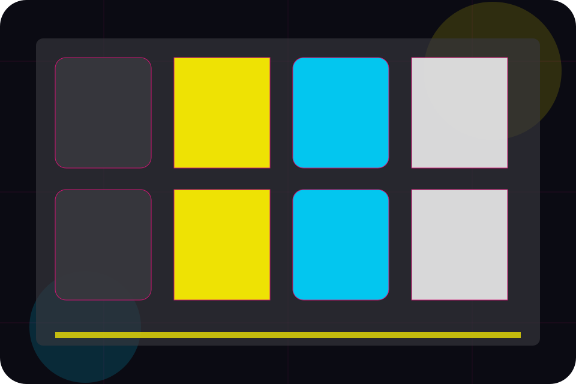
Press / 02
Kit inside press
Kit adds professional context to the press route, using the neon editorial news grid structure to support audience reach and timing before visitors choose a next step.
Wave uses angled story cards and focused copy to make the decision easier to scan, aligning the section with audience reach and timing rather than filling space.
Explore Press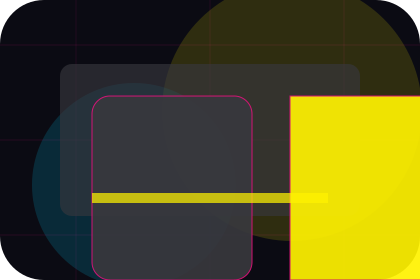
Context
Kit gives the page a specific angle instead of repeating the navigation label.
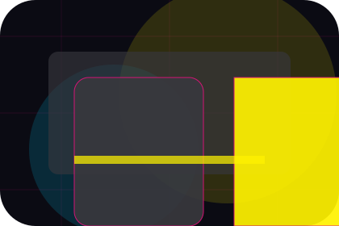
Judgment
The angled story cards show what to compare, what to avoid, and what matters most for media, broadcasting & digital content visitors.
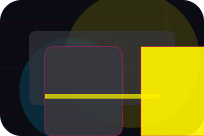
Direction
The final cue points to a useful internal route so the section keeps the journey moving.
Press / 03
Logos inside press
Logos adds professional context to the press route, using the neon editorial news grid structure to support audience reach and timing before visitors choose a next step.
Wave uses angled story cards and focused copy to make the decision easier to scan, aligning the section with audience reach and timing rather than filling space.
Explore PressContext
Logos gives the page a specific angle instead of repeating the navigation label.
Judgment
The angled story cards show what to compare, what to avoid, and what matters most for media, broadcasting & digital content visitors.
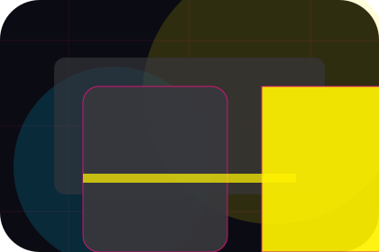
Direction
The final cue points to a useful internal route so the section keeps the journey moving.
Press / 04
Bios inside press
Bios adds professional context to the press route, using the neon editorial news grid structure to support audience reach and timing before visitors choose a next step.
Wave uses angled story cards and focused copy to make the decision easier to scan, aligning the section with audience reach and timing rather than filling space.
Explore PressWave structures bios around context, judgment, and a clear next route so visitors can compare the block quickly before they advertise with the team.
Advertise With UsPress / 05
Releases inside press
Releases adds professional context to the press route, using the neon editorial news grid structure to support audience reach and timing before visitors choose a next step.
Wave uses angled story cards and focused copy to make the decision easier to scan, aligning the section with audience reach and timing rather than filling space.
Explore PressContext
Releases gives the page a specific angle instead of repeating the navigation label.
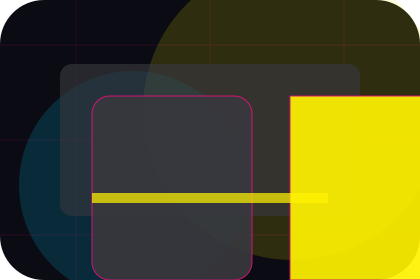
Judgment
The angled story cards show what to compare, what to avoid, and what matters most for media, broadcasting & digital content visitors.
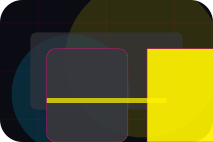
Direction
The final cue points to a useful internal route so the section keeps the journey moving.
Press / 06
Photos inside press
Photos adds professional context to the press route, using the neon editorial news grid structure to support audience reach and timing before visitors choose a next step.
Wave uses angled story cards and focused copy to make the decision easier to scan, aligning the section with audience reach and timing rather than filling space.
Explore PressContext
Photos gives the page a specific angle instead of repeating the navigation label.
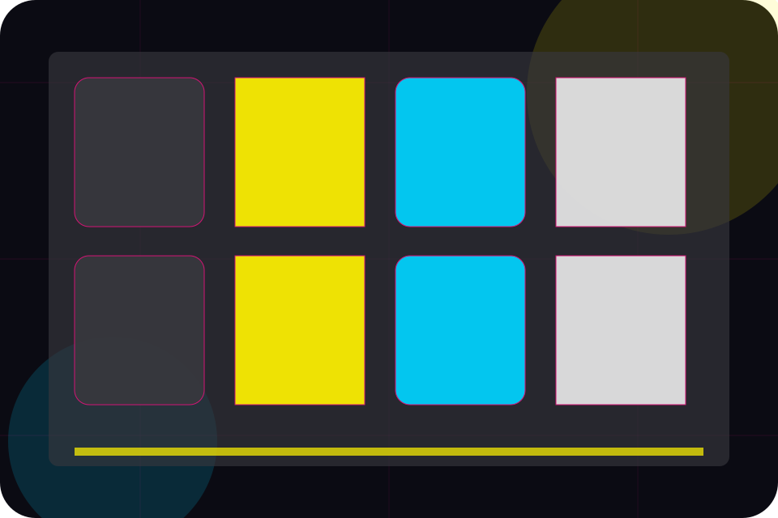
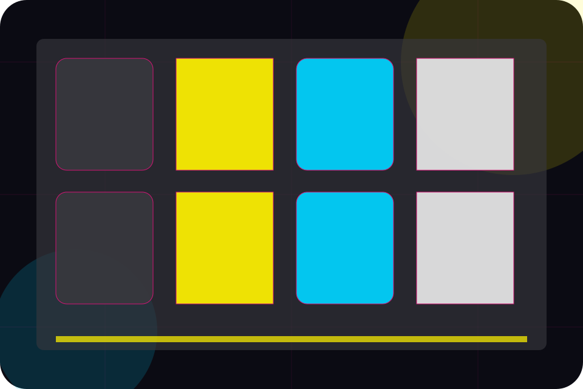
Press / 07
Mentions inside press
Mentions adds professional context to the press route, using the neon editorial news grid structure to support audience reach and timing before visitors choose a next step.
Wave uses angled story cards and focused copy to make the decision easier to scan, aligning the section with audience reach and timing rather than filling space.
Explore PressContext
Mentions gives the page a specific angle instead of repeating the navigation label.
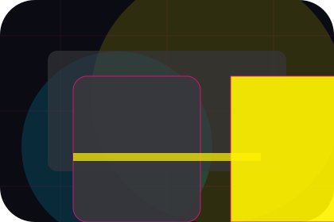
Judgment
The angled story cards show what to compare, what to avoid, and what matters most for media, broadcasting & digital content visitors.
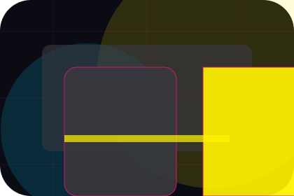
Direction
The final cue points to a useful internal route so the section keeps the journey moving.
Press / 08
Media inside press
Media adds professional context to the press route, using the neon editorial news grid structure to support audience reach and timing before visitors choose a next step.
Wave uses angled story cards and focused copy to make the decision easier to scan, aligning the section with audience reach and timing rather than filling space.
Explore Press- 01
Context
Media gives the page a specific angle instead of repeating the navigation label.
- 02
Judgment
The angled story cards show what to compare, what to avoid, and what matters most for media, broadcasting & digital content visitors.
- 03
Direction
The final cue points to a useful internal route so the section keeps the journey moving.
Angular media hero
Filter the schedule
Select the closest route and Wave keeps the next step, proof, and follow-up expectation aligned with audience reach and timing.
Press / 09
Download for deeper decisions
Download gives researching visitors a practical route into guides, checklists, and comparison material without leaving the site structure.
Each resource behaves like a useful internal link, giving cold and warm visitors a way to learn, compare, and return to the action path.
Explore PressGuide
A useful entry point for visitors who need more context before they advertise with the team.
Checklist
A scannable comparison aid that makes research usable before the next decision.
Questions
A route back to support, services, or contact when the visitor is ready to act.
Press / 10
Advertise With Us
Wave closes the press route with a clear action, a quick reminder of the value, and a low-friction way to advertise with the team.
Visitors who are ready can use the primary action. Visitors who are still comparing can scan the section links, proof, and support routes before they advertise with the team.
Advertise With UsThe final block keeps the choice simple: act now, compare one more proof route, or send enough detail for a focused response.
Advertise With Usaudience reach and timing
Advertise With Us
A media site with bold editorial grid, neon category strips, episode cards, and advertiser download routes. Press ends with a direct path to advertise with the team, plus enough context for visitors who still need to compare.
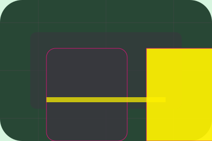
Advertise With UsImportant notes before you act
Information is provided for planning and should be reviewed for the final client, location, and operating rules.